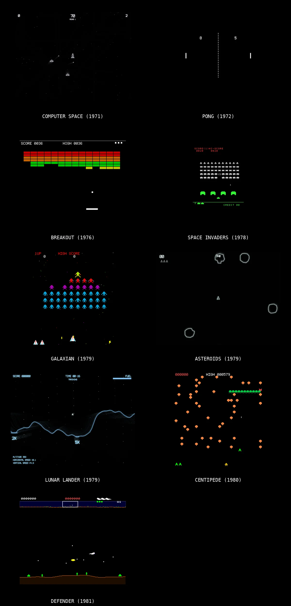

In about 4 hours, I usedClaudeCode, a custom skill, and Agent Teams to recreate 9 classic arcade games (1971-1981) in vanilla JavaScript. Computer Space. Pong. Space Invaders. Asteroids. Galaxian. Defender.
Each game is built with parallel agent teams, pixel-accurate sprites derived from ROM dumps, and procedural audio synthesis, all in a single-file vanilla JS. Zero dependencies. No frameworks. Just open index.html and play.
Turns out AI agents are really good at:
• Researching arcade hardware behavior from MAME source code
• Coordinating parallel builds with strict interface contracts
• Debating whether Defender humanoids should be orange or green (they're green)
The result: 9 games that feel as authentic as my memories of them (yes, Galaxian needs more work!). Many more are coming 😃
Enjoy!
Repository:https://github.com/juliensimon/browser-games/